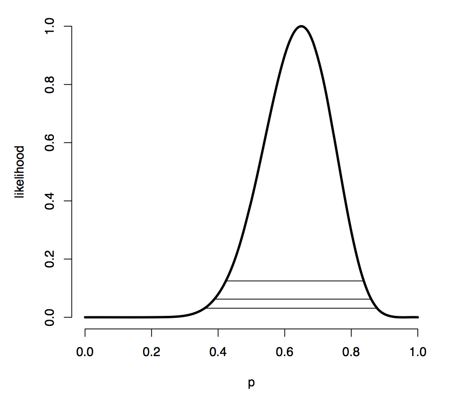

# Fisher 信息量
简单地说，信息量反映着某个统计量对于参数的确定程度的贡献。
定义上，Fisher 信息量被定义为：C-R 正则族得分函数的二阶矩（数理统计中，未特别说明时，默认为原点矩）。其中得分函数即为对数似然函数的一阶导。
I(θ)=E[S(X;θ)2]
其可以理解为：
- 得分函数的方差
I(θ)=Var(S(X;θ))
- 负二阶导数的期望
I(θ)=−E[∂θ2∂2lnp(x;θ)]
那么如下图：

这是一个对数似然 - 参数曲线，我们希望这个曲线越陡峭越好，这意味着参数有着更大可能是某一值 ——
- 直观上，凸函数的峰越高，分布越集中，那么对数似然这个
[分布] 的方差越小
- 正凹负凸，二阶导为负；凸得厉害很陡峭，意味着一阶导数变化率也很大，即二阶导的绝对值很大
- 一阶导数变化率大，即得分函数的
[分布] 离散，方差大
# 有效估计
信息不等式：
要求：C-R 分布族，待估函数φ(θ) 可微，无偏统计量T(x) 方差小于无穷
结论：
Varθ(T(X))≥I(θ)[φ′(θ)]2=nI(θ)[φ′(θ)]2
当待估函数为参数本身，即φ(θ)=θ，不等式右边退化为I(θ)1，也被成为 C-R 下界
那么我们根据此，引出有效估计的概念：
如果某个无偏估计T 的方差达到了 C-R 下界，则称其为有效估计。
有效估计是无偏中方差最小的，必为 UMVUE；
但 UMVUE 这么伟大的东西，也并不能保证其达到有效估计
尽管 UMVUE 一般都达不到 C-R 下界，但一般都是一个渐进有效估计。我们可以把渐近有效估计看成对 C-R 估计的一种妥协，就能更好地理解这个概念了。
# 渐进无偏估计 & 渐进有效估计
渐进无偏：
n→∞limEθ(Tn)=q(θ)
渐进有效：
n→∞limnI(θ)[q′(θ)]2/Varθ(Tn)=1
# 相合估计
设qn(X)=qn(X1,...,Xn) 是参数q(θ) 的任一估计序列，如果{qn} 依概率收敛于参数真值q(θ)，即：
对任意的ε>0，有
n→∞limP{∣qn(X)−q(θ)∣>ε}=0
或者写作：
qn(X)→pq(θ)
则称qn(X) 是q(θ) 的相合估计（Consistent Estimate）。相合性只是反映了n→∞ 时估计量的性质，即大样本性质，当样本容量有限时是无意义的。
相合估计关注的是估计量本身的收敛性，而渐进无偏估计关注的是估计量期望的收敛性
渐进无偏估计不一定是相合的，但是相合估计一定是渐进无偏的